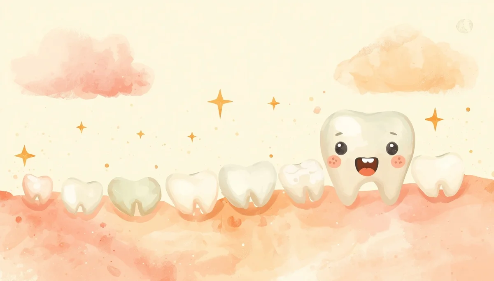

Erupción Dental y Alivio de Molestias
Anatomía del desarrollo dental temprano, cronología detallada de la erupción, diferenciación de síntomas reales y pautas seguras de alivio.

Índice Detallado de la Guía
Contenidos paso a paso:
1. Formación embrionaria y genética de los dientes temporales
La gestación dental comienza en una etapa muy temprana del embarazo (alrededor de la sexta semana de vida intrauterina). En este periodo se originan las láminas dentales primarias de las que derivarán los futuros dientes de leche. Aunque los bebés nacen sin piezas visibles en la boca, las coronas de los 20 dientes temporales ya se encuentran completamente formadas y mineralizándose de forma silenciosa en el interior de los maxilares, esperando las señales hormonales y mecánicas que propiciarán su salida.
2. Cronología detallada de la erupción de los 20 dientes
Existe un patrón general de aparición de las piezas, aunque los márgenes de variabilidad entre niños son muy amplios y no debe cundir la alarma si un diente se retrasa unas semanas o meses:
- • De 6 a 10 meses: suelen despuntar los incisivos centrales inferiores y, poco después, los incisivos centrales superiores. Son los encargados de los primeros mordiscos.
- • De 10 a 16 meses: erupcionan los incisivos laterales (a los lados de los centrales) y aparecen de forma simultánea los primeros molares temporales, fundamentales para comenzar la masticación consistente.
- • De 16 a 20 meses: brotan los caninos (o colmillos), rellenando los espacios intermedios de la arcada dental.
- • De 20 a 30 meses: emergen los segundos molares temporales, completando el conjunto de 20 piezas que conformarán la dentición infantil hasta la llegada de los dientes definitivos.
3. Sintomatología clínica real frente a mitos erróneos
El proceso físico en el que la corona del diente rompe el tejido de la encía genera una reacción inflamatoria local perfectamente comprensible. Los signos clínicos reales se limitan a:
- • Aumento notable de la salivación (sialorrea) debido a la estimulación de las glándulas salivales.
- • Irritabilidad diurna, nerviosismo y despertares nocturnos puntuales por la molestia constante en la zona.
- • Necesidad irrefrenable de morder objetos duros, meterse las manos en la boca o frotarse las encías para aliviar la presión interna.
- • Enrojecimiento leve de la zona periorcal (alrededor de los labios) por el contacto continuo con la saliva.
Aclaración clave: La fiebre alta, los vómitos repetidos, las diarreas líquidas o los catarros intensos no forman parte de los síntomas de la dentición. Si un niño presenta fiebre o decaimiento severo, debe ser valorado por el pediatra para descartar infecciones concurrentes (como otitis o procesos víricos).
4. Estrategias físicas seguras para calmar el dolor de encías
Para mitigar las molestias del lactante priorizando siempre la seguridad física, se recomienda:
- • Utilizar mordedores de una sola pieza fabricados con silicona médica o caucho natural, preferiblemente enfriados en la nevera (nunca en el congelador, ya que las temperaturas bajo cero pueden producir quemaduras por frío en la delicada mucosa de la encía).
- • Masajear suavemente la encía con una gasa limpia humedecida en agua fría o directamente con la yema del dedo limpio ejerciendo una presión firme que contrarreste la presión interna del diente.
- • Evitar rotundamente collares de ámbar, pulseras u otros remedios milagrosos no contrastados debido al riesgo letal de asfixia y estrangulamiento.
5. Cuándo acudir al especialista durante la dentición
Aunque la dentición es un proceso fisiológico natural, conviene consultar con el odontopediatra o el pediatra si se observan anomalías morfológicas destacables (como dientes natales presentes ya desde el nacimiento que causen heridas, quistes de erupción sobreelevados con hematoma persistente, o si superados los 14-16 meses no ha hecho erupción ninguna pieza dental).
Nota importante: Si barajas el uso de geles tópicos calmantes o medicamentos analgésicos sistémicos (como paracetamol), consulta antes con el profesional sanitario para adecuar estrictamente la dosis al peso del menor.